Victor de Lucas, Gama e Brasília , DF: Realismo preto e cinza que eterniza a sua fé, quem você ama, a força de um leão, deuses e guerreiros.
Tatuagens grandes e cheias de detalhe, do antebraço às costas inteiras. Projeto autoral, do desenho ao pós-tratamento.

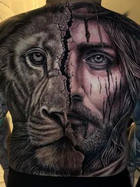

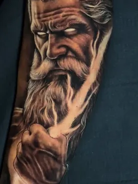

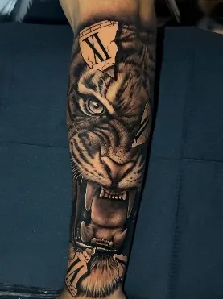

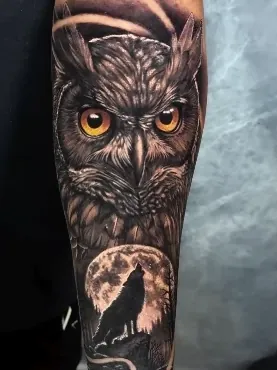

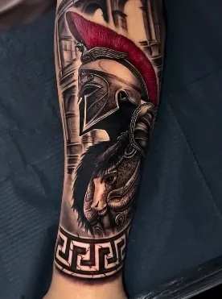

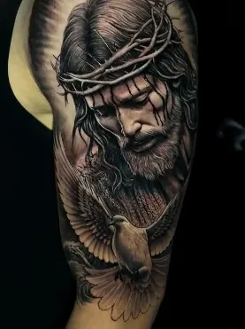

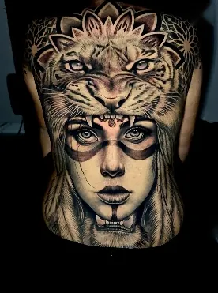

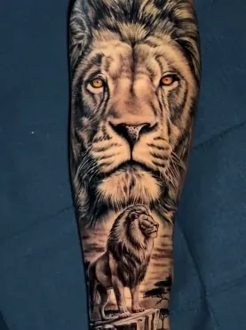

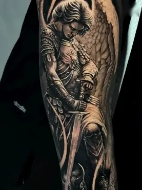

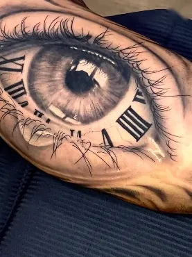

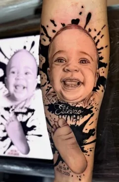

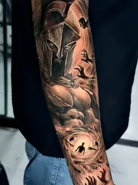

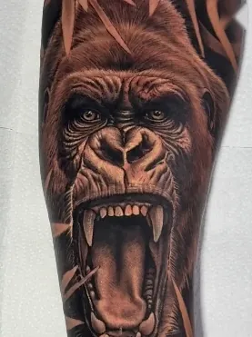

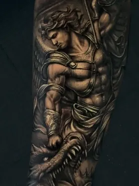

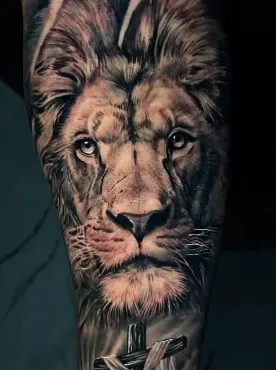

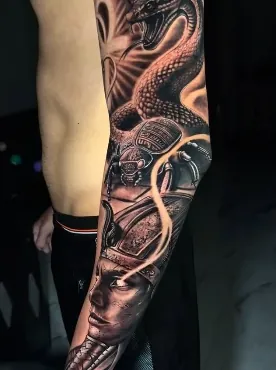

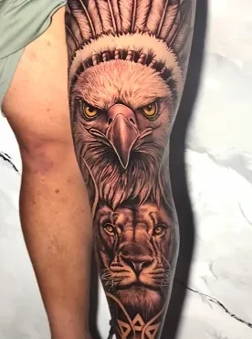

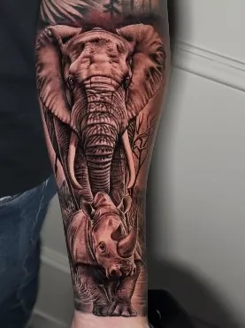

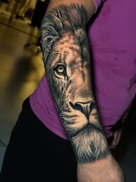
O artista
O artista: Victor de Lucas
Realismo preto e cinza é desenhar com luz e sombra. Cada tom sai da mesma tinta, mais ou menos diluída, até a pele ganhar volume, textura e olhar. Victor de Lucas constrói cada peça assim: com projeto próprio, camada por camada, pensada para o seu corpo.
Victor de LucasTatuador · Gama, Brasília - DF
Projeto autoral
Cada desenho é criado para a sua ideia e para o local do corpo.
Realismo preto e cinza
Luz, sombra e textura em camadas, do preto puro aos tons mais claros.
Biossegurança
Higiene e segurança levadas a sério em cada etapa da sessão.
Acompanhamento até a cicatrização
Orientações de cuidado e contato aberto depois da sessão.
Na maca do estúdio
Antes da primeira agulha
Um antebraço apoiado na maca, ainda sem nada. Passe o mouse sobre o braçoSegure o dedo no braço e arraste: a tatuagem aparece por onde você passar. É o leão que o Victor fez nessa pele, em realismo preto e cinza.
A pele limpa é uma simulação digital feita a partir da foto real. A tatuagem é trabalho do Victor, em foto do Instagram @victor.tattoo__.
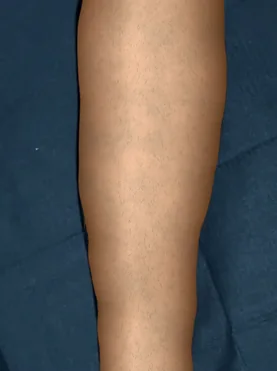
Portfólio
Trabalhos recentes
Costas inteiras, braços fechados, pernas e retratos. Todas as fotos são do Instagram do estúdio. Toque em uma foto para ampliar.
Leão e JesusCostas inteiras Coruja e loboAnimais Espartano e leãoGuerreiros Jesus e pombaBraço Mulher com cocar de tigreCostas inteiras Tigre e relógioAnimais Zeus com raioMitologia Retrato com nomeHomenagem Águia e leãoPerna Anjo guerreiroFé Serpente e escaravelhoBraço fechado GorilaAnimais Leão e cruzFé Espartano e corvosGuerreiros Olho e relógioRealismo Leões na paisagemAnimais São Miguel ArcanjoFé Elefante e rinoceronteAnimais LeãoAntebraço
Retoque e reforma
Antes e depois
O mesmo leão, antes e depois. Quando uma tatuagem perde contraste, desbota ou ficou sem acabamento, vale uma avaliação.
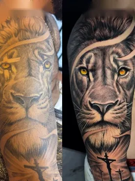
Especialidade
Luz e sombra com uma tinta só
No realismo preto e cinza, os tons saem da mesma tinta preta, diluída em proporções diferentes. Aplicadas em camadas, essas diluições constroem volume, textura e profundidade, até um olho parecer de verdade.
- Preto puro
- 70%
- 50%
- 30%
- 10%
- Pele
Serviços
Do desenho ao cuidado
Treze serviços em três frentes. Abra um serviço para ler mais e pedir orçamento já com o nome dele na mensagem.
Criação e estilos
-
Desenho criado a partir da sua ideia, das suas referências e do local do corpo.
Pedir orçamento de design de tatuagem pelo WhatsApp (abre em nova aba) -
Homenagens a quem você ama: retratos, nomes, datas e símbolos que guardam uma história.
Pedir orçamento de tatuagens memoriais pelo WhatsApp (abre em nova aba) -
Nomes, frases e datas com letras desenhadas para combinar com a tatuagem e com o seu corpo.
Pedir orçamento de tatuagem com letras personalizadas pelo WhatsApp (abre em nova aba) -
Temas da tradição asiática adaptados ao seu projeto. Conte a sua ideia e mande referências no orçamento.
Pedir orçamento de tatuagens asiáticas tradicionais pelo WhatsApp (abre em nova aba) -
Grafismos de inspiração polinésia, pensados para acompanhar a anatomia. Converse sobre a sua ideia no orçamento.
Pedir orçamento de tatuagens tribais polinésias pelo WhatsApp (abre em nova aba)
Projetos grandes
-
Do antebraço ao braço fechado, com a composição pensada para o movimento do braço.
Pedir orçamento de tatuagens para os braços pelo WhatsApp (abre em nova aba) -
Peças de grande formato em costas, peito, pernas e costelas, com o projeto planejado do início ao fim.
Pedir orçamento de tatuagens grandes pelo WhatsApp (abre em nova aba) -
Projetos que ocupam grandes áreas do corpo, desenvolvidos por etapas a partir de um desenho único.
Pedir orçamento de tatuagens de corpo inteiro pelo WhatsApp (abre em nova aba)
Acabamento, cuidado e correção
-
Detalhes finais, contraste e definição para deixar a tatuagem completa.
Pedir orçamento de acabamento de tatuagem pelo WhatsApp (abre em nova aba) -
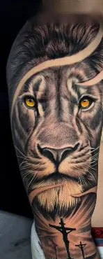
Reforço de tons e contornos que perderam força com o tempo ou na cicatrização.
Pedir orçamento de retoque de tatuagens pelo WhatsApp (abre em nova aba) -
Orientações de cuidado e acompanhamento da cicatrização depois da sessão. Veja os cuidados básicos.
Pedir orçamento de pós-tratamento de tatuagens pelo WhatsApp (abre em nova aba) -
Avaliação da tatuagem que você quer remover. Fale com o estúdio para saber o que é possível no seu caso.
Pedir orçamento de remoção de tatuagem pelo WhatsApp (abre em nova aba) -
Para quem quer clarear uma tatuagem antiga e trabalhar por cima dela. A avaliação é feita caso a caso.
Pedir orçamento de remoção e retoque de tatuagens pelo WhatsApp (abre em nova aba)
Processo
Do orçamento à cicatrização
Quatro etapas, do primeiro contato ao último cuidado.
Orçamento pelo WhatsApp
Mande a sua ideia, referências, o local do corpo e o tamanho aproximado.
Projeto autoral
O desenho é feito sob medida para você, com ajustes antes da sessão.
Sessão
Biossegurança e conforto do começo ao fim, no estúdio no Gama.
Cicatrização e pós
Orientações de cuidado e acompanhamento. Retoque quando for necessário.
Orçamento
Monte o seu pedido
Preencha o que souber. A mensagem fica pronta para enviar no WhatsApp do Victor; nada é enviado por este site.
Avaliações
Avaliado no Google
Nota 4,8 de 5, na média de 25 avaliações públicas no Google Maps. Leia o que os clientes escreveram ou deixe a sua.
Ver avaliações no Google (abre em nova aba) Avaliar o estúdio no Google (abre em nova aba)
Pós-tratamento
Cuidados depois da sessão
Orientações gerais para os primeiros dias. Quem define os cuidados do seu caso é o tatuador.
Lave com as mãos limpas
Use sabonete neutro e água corrente, sem esfregar a tatuagem.
Só uma camada fina
Aplique uma camada fina do produto indicado pelo tatuador. Excesso não ajuda.
Não coce
Não coce nem arranque as casquinhas. Deixe a pele se renovar no tempo dela.
Sol, piscina e mar
Evite sol, piscina e mar durante a cicatrização.
Roupas leves
Prefira roupas que não apertem nem atritem a região tatuada.
Siga sempre as orientações do Victor; cada pele cicatriza de um jeito.
Dúvidas
Perguntas frequentes
Como faço um orçamento?
Pelo WhatsApp (61) 99804-3597. Mande sua ideia, o local do corpo e o tamanho aproximado. Se preferir, use o formulário desta página: ele monta a mensagem para você.
O que devo mandar no orçamento?
Sua ideia, fotos de referência, o local do corpo e o tamanho aproximado. Se já existe uma tatuagem no local, mande uma foto dela também.
Posso levar meu próprio desenho ou referência?
Pode. Suas referências mostram ao Victor o que você imagina, e ele usa esse material como ponto de partida para criar o projeto.
Dá para reformar ou cobrir uma tatuagem antiga?
Depende do tamanho, das cores e do estado da tatuagem atual. O estúdio faz retoque, acabamento e remoção e retoque. Mande uma foto bem iluminada pelo WhatsApp para uma avaliação.
Quantas sessões leva uma tatuagem grande?
Depende do tamanho, do local e do nível de detalhe. O Victor estima no orçamento, depois de ver a sua ideia.
Onde fica o estúdio?
No SH Ponte de Terra DF 480, Ponte Alta Norte, Gama, Brasília - DF, CEP 72427-110. Ver no Google Maps (abre em nova aba).
Contato
Venha ao estúdio
No Gama, Brasília - DF. Fale com o Victor pelo WhatsApp antes de vir.
- WhatsApp Pedir orçamento (61) 99804-3597 (abre em nova aba)
- Telefone (61) 99804-3597 Ligar agora
- Instagram @victor.tattoo__ Veja os trabalhos mais recentes (abre em nova aba)
-
Endereço SH Ponte de Terra DF 480 - Pte. Alta Norte (Gama), Brasília - DF, 72427-110 Como chegar (abre o Google Maps em nova aba)
A sua ideia, em preto e cinza.
Mande a ideia, as referências e o local do corpo. O Victor responde com o orçamento.